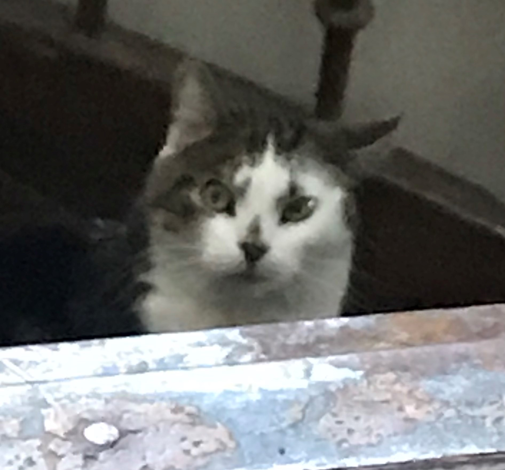

“I have studied many philosophers and many cats. The wisdom of cats is infinitely superior.” –Hippolyte Taine
NÖÖP
<<<<<<< HEAD:nööp.html

Nööp on varjupaigast adopteeritud 2017. aasta aprillis. Nööp on suur, koheva karvaga ja üsna aeglane. Aeglane justnimelt seetõttu, et ta ei saanud kassipojana piisavalt süüa.. Tegelikult sellepärast ta vist sööb ka liiga palju ja on natuke ülekaaluline.. Noh.. pole hullu.
=======
 >>>>>>> ceb0cfd95dee08de8c81324b2887d71824099904:noop.html
>>>>>>> ceb0cfd95dee08de8c81324b2887d71824099904:noop.html